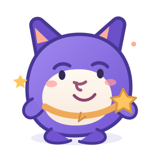

01
Lihat
Amati bahasa isyarat dan bentuk mulut dengan saksama.
〰Jelajahi bentuk mulut, bahasa isyarat, dan latihan seru bersama pendampingmu.

TIGA LANGKAH KECIL
Amati bahasa isyarat dan bentuk mulut dengan saksama.
〰Tirukan gerakan dan coba latihan sesuai kemampuanmu.
✳Lihat feedback visual dan simulasi getaran yang seru.
⌁LANJUTKAN PERJALANAN
Tak perlu terburu-buru.
Usaha kecilmu berarti.
PERPUSTAKAAN BELAJAR
Mulai dari yang sederhana. Kamu bisa kembali kapan saja.
Belajar sesuai ritmemu. Materi ditujukan untuk eksplorasi bersama pendamping.
KONSONAN BILABIAL
Amati, pelajari, lalu coba bersama pendamping.
KOMUNIKASI VISUAL
Media perlu divalidasi oleh penutur/pengajar SIBI atau BISINDO. File yang dipilih tidak diunggah.
AMATI POSISI DAN GERAK
Ilustrasi artikulasi visual untuk membantu mengamati dan meniru bentuk mulut. Bukan penilaian atau model medis; ikuti bimbingan guru dan terapis.
PETUNJUK GERAK
Rapatkan kedua bibir, kemudian buka bibir secara perlahan.
CONTOH SEHARI-HARI
WAKTUNYA MENCOBA
Ikuti aktivitas suara dengan cara yang nyaman untukmu.
MATERI SAAT INI
PANTAU AKTIVITAS
Mikrofon hanya aktif setelah kamu menekan “Mulai rekam”. Audio tidak disimpan atau dikirim ke server.
Informasi penting: Sistem hanya mendeteksi aktivitas suara, kekuatan, dan durasi vokalisasi. Sistem tidak menilai ketepatan bunyi atau fonem.
SEMUA USAHAMU BERARTI
Rayakan setiap langkah kecil yang sudah kamu coba.
PERJALANAN BELAJARMU
LENCANA KECIL
Progres disimpan hanya di perangkat ini menggunakan penyimpanan lokal browser.
RUANG UNTUK PENDAMPING
Informasi untuk membantu mendampingi proses belajar anak.
RINGKASAN PROGRES
“Dampingi anak selama latihan dan berikan penguatan positif.”
Setiap anak belajar dengan ritmenya sendiri.PANDUAN SINGKAT
Pastikan anak merasa nyaman dan siap sebelum latihan.
Tunjukkan contoh visual, lalu beri waktu untuk mencoba.
Apresiasi usaha, bukan hanya hasil yang terlihat.
Gunakan DENTUM-EDU sebagai media pendukung, bukan sebagai pengganti guru atau terapis.
PREFERENSI LATIHAN
Sesuaikan pengalaman latihan bersama anak.
ATUR RUANG BELAJARMU
Sesuaikan pengalaman belajar agar terasa nyaman.
SENSOR AKTIVITAS
FEEDBACK TAKTIL
Kekuatan getaran
AKSESIBILITAS
Ukuran teks
PREFERENSI
Tema tampilan
Bahasa isyarat
Ketersediaan bentuk isyarat dapat berbeda menurut wilayah dan komunitas.
KENALI MEDIA BELAJARMU
Lihat → Tiru → Rasakan
MEDIA PEMBELAJARAN VISUAL-TAKTIL
DENTUM-EDU adalah media pembelajaran berbasis website yang mendukung latihan artikulasi anak tunarungu melalui pendekatan visual-taktil.
CARA KAMI MENGHUBUNGKAN
BATASAN SISTEM
Audio tidak disimpan. Analisis aktivitas suara berlangsung di browser pada perangkat pengguna.
AREA DEMONSTRASI
Periksa dukungan browser dan coba komponen prototipe.
KOMPATIBILITAS
COBA LANGSUNG
Pilih fitur untuk menjalankan pengujian.
CHECKLIST DEMONSTRASI
CATATAN